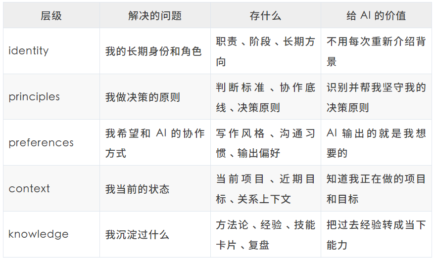
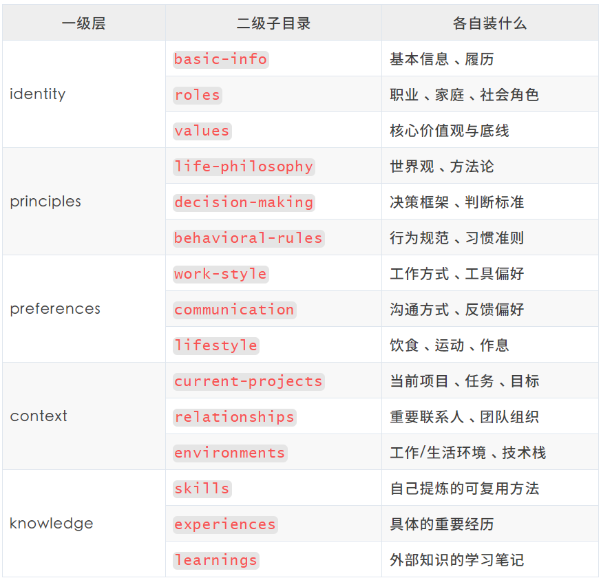
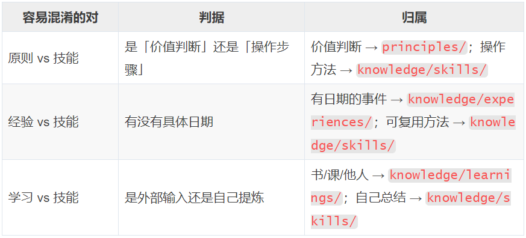
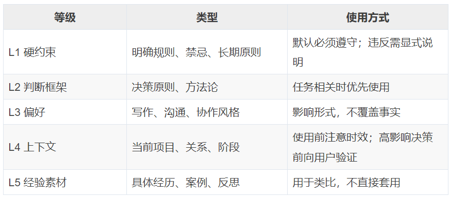
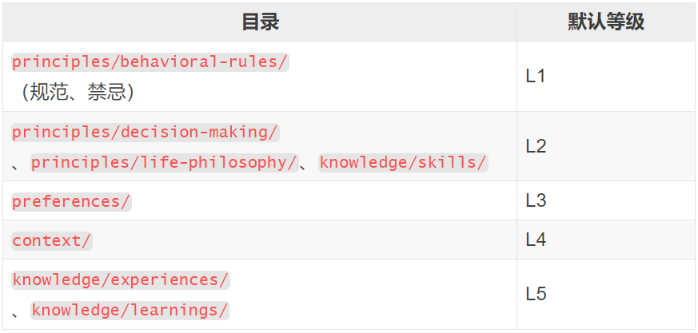
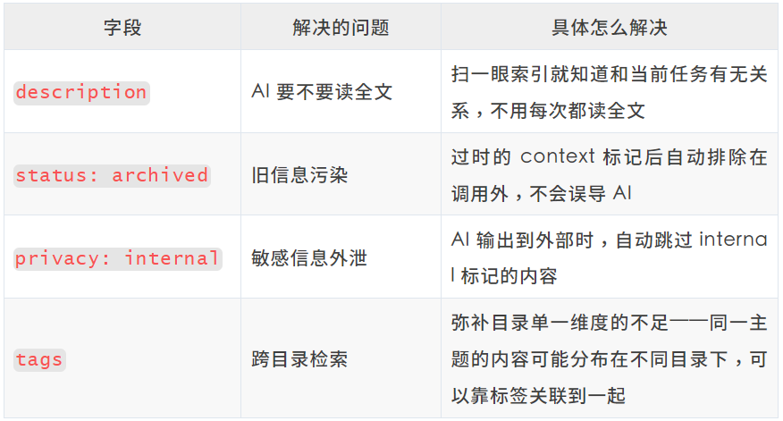
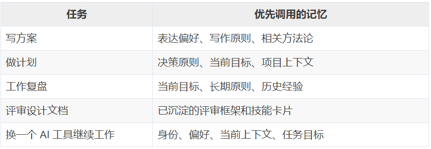

01
想法来自于工作中的实际感悟：任何公司和组织如果想用好 AI，前提是一定要完成相关的基建治理：数据清洗、知识库构建、流程对接等，否则再强的模型进来也只是个聪明的陌生人。
自己在工作中也经常遇到：给 codebuddy 讲的个人信息、原则、协作关系等重要内容，还要给 workbuddy、龙虾、claude code 等都重复讲一遍，要命的是每次新增、更新都要重复再讲一遍、更要命的是有些信息本身就需要频繁更新。人都有惰性，我也有，所以这些 AI 同事之间就有了信息差，协作问题就产生了……
不过，更难受的点还不是「要重复说」——是我积累的上下文和判断经验，绑在了特定的工具上。换工具就丢了。
能不能无论我用哪个 AI，他都能快速知道我是谁、我在做什么、我怎么判断、我希望他怎么和我协作、并且这些信息还能自动更新同步……？ 最关键的是，这些信息要属于我并且归我管，而不是绑定在某个工具上。
于是这个尝试就有了。
02
2.1 五层记忆
我把个人记忆拆成五层，每层回答一个问题：
identity 我是谁principles 我的原则/我如何判断preferences 我希望 AI 怎样和我协作context 我正在经历/做什么knowledge 我有哪些可复用的经验和能力
每层的价值：

2.2 二级子目录
每个一级目录下，再划分二级子目录：

二级目录的分法都遵循一个原则：同一层内部，按「信息的来源或用途」拆分成三类，不强行凑数也不放任发散。
2.3 目录有且只有两级、禁止无限嵌套
自己有一条硬约束：有且只有两级子目录，二级目录下只放文件，禁止再建三级目录。 内容多了，用文件名前缀区分（如 report-xxx.md、coding-xxx.md），而不是新建子目录。
深目录会稀释判断。 路径每深一层，AI（和我自己）定位一条记忆要做的选择就翻倍。三层、四层嵌套下去，「这条到底在哪」本身就成了成本。两级封顶，任何一条记忆最多两次选择就能定位。
嵌套会把「分类」变成「迷宫」。 子目录一旦可以无限建，同一类信息就一定会因为约束不明确导致越积越乱。扁平结构 + 文件名前缀，分类信息写在文件名里，一眼可扫。
逼迫我在「分类」和「内容」之间做对的取舍。 当我想再建一层目录时，往往说明我在用新增目录逃避「这条记忆到底属于哪类」的判断。约束死目录深度，倒逼自己把归类想清楚。
2.4 冲突解决
两层结构看起来清晰，但实际往里放东西时，还是经常会遇到灰色地带：放在这里也行、放在那里也不是不可以。 早期都是自己人工判断，后来逐渐形成了一套简单、易维护的判断规则，并且只需要覆盖最容易有分歧的几个灰色地带就行：

还有一层稳定性的考量：identity/、principles/ 是稳定层，极少变；preferences/、context/、knowledge/ 是动态层，持续更新。归类时分清一条信息是「长期不变的我」还是「当前阶段的我」，能避免把易变的 context 误当成长期身份。
举几个例子：
「诚信是底线」——价值判断，进
principles/；「系统风险梳理工作法」——操作步骤，进knowledge/skills/。「2026-02-04 xx系统设计评审纪要」——有日期的事件，进
knowledge/experiences/；自己事后提炼出的「系统设计评审模板」——无时间绑定的方法，进knowledge/skills/。《金字塔原理》读书笔记——外部输入，进
knowledge/learnings/；我内化后形成的自己的表达框架——自己提炼，进knowledge/skills/。
这里有一条升级路径：经验里反复出现的规律 → 提炼成技能；学习内容内化后 → 形成自己的技能。记忆不是静态归档，是会「升级」的。不过目前升级主要还依赖我人工判断。
03
我把五层记忆按重要性分成五个等级：

权重等级不作为独立字段写入每个文件，而是和目录绑定，即一个内容所在的目录，决定了它的权重：

冲突裁决：高等级优先于低等级。但始终保留用户的最终决策权——AI 可以告诉我「你的某条 L1 原则和当前决策冲突」，但决策是我来做，不是它替我做。
04
我给每个记忆文件加了一套 7 字段的 YAML frontmatter 元数据，相当于每条记忆的身份证。方案参考了 Google Cloud 的 OKF（Open Knowledge Format）规范，但我只取了自己需要的 7 个字段，让 AI 可以更高效的使用记忆内容：
---type: # Identity/Principle/Preference/Context/Skill/Experience/Learning — 与目录一一对应title: # 一句话标题 — 进 INDEX 总索引，AI 先看地图再决定读哪篇正文description: # 一句话说明「是什么 + 何时调用」— AI 扫到这里就能判断要不要往下读status: # active / archived — 过期的标记出来，不参与调用privacy: # internal（含个人信息/团队信息等）/ public（通用方法论等）tags: # 跨目录主题标签，比如 [写作, 汇报, 认知] — 弥补目录单一维度的不足timestamp: # YYYY-MM-DD — 沉淀日期，不是创建日期---
这 7 个字段，每一个都在解决一个实际问题：

05
拿我维护的一份「团队组织协作关系」说明整套结构是怎么落地的。
我有一段时间需要找不同团队的人梳理系统实现、沟通新项目方案、协调项目进展。项目涉及的团队多、人更多，经常漏掉干系人——该对齐的没对齐，方案推进到一半才发现「这个人还没聊过」，再回头补，节奏就乱了，自己也非常被动。
所以这个内容定位很关键：它不是通讯录，也不是项目材料，而是一份「AI 协作索引」，帮 AI 判断「这件事涉及谁、哪个团队负责、谁能拍板、谁要对齐、哪些还不确定」。
它放在 context/relationships/——组织关系是会变的现状，不是长期身份（不进 identity），也不是判断原则（不进 principles）。
内容放三类信息：
高置信的组织事实——谁负责什么、谁向谁汇报、团队边界在哪；
可使用的协作约束——谁主要负责什么、是负责人还是对接人、谁能拍板；
明确标注的待补齐项——不确定的信息单独列在「待补齐清单」，后续澄清后记录到正文。
实际应用案例：
有一次我要推进一个指数标签投放的方案，涉及三四个团队。我在和 AI 同步项目进展时，AI 基于这份协作关系文档主动提醒我：
「这个方案涉及标签系统和投放策略—— 张三的运营团队是需求主责方，你们之前的约定是张三团队中的李四提运营需求，你这边承接能力建设。要不要先把方案草稿发给李四对齐一下？另外，领域责任分工里交易应用侧的对接人是王五，方案涉及交易应用系统的依赖，也建议提前同步。」
惊喜的是，AI 经常挖掘出来的协作人员清单，比我自己想到要全，并且会主动提醒：某某事项你应该提前和谁谁对齐一下。没有这份信息时，AI 像执行员工，有了这份信息，AI 就像贴身秘书。
这份文档的价值不在于「存了谁是谁」，而在于 AI 能在正确的时机，把正确的人从我的记忆里「捞」出来，摆在我面前。
06
我给记忆库建了两层索引。AI 进来先扫索引，按需加载，不全量阅读。
6.1 总索引：memories/INDEX.md
这是整个记忆库的地图。收录了所有记忆文件的 title + description，一行一条。AI 扫一遍 INDEX，就知道「目录里有啥、哪些可能和当前任务有关」，再决定读哪些正文。 每写一条新记忆或修改一条已有记忆，INDEX 自动同步更新，由记忆维护的 skill 在写入时顺手维护。
6.2 子索引：每个目录的 README.md
每个一级和二级目录下都有一个 README，告诉 AI 这个目录装什么、不装什么、常见文件是什么。新 AI 第一次接入时按 README 快速了解目录结构，不需要我重复解释。
07
接下来讲怎么使用和维护记忆。
记忆使用分两层：
公共基线——关键的协作原则、沟通偏好、行为准则，定期同步到各个 AI 工具的全局配置里，不用每次手动调用。
按需加载——特定任务、特定会话才会用到的记忆，只在任务相关时调取。我开发了
personal-memory-recallskill，专门做这件事。
记忆维护则由 personal-memory-curator skill 负责：从日常对话中提取值得沉淀的内容，经我确认后写回记忆库，并同步索引。它解决的是记忆怎么新增、更新和归类的。
这两个 skill 都是跨平台的——只要工具支持 skill，就能方便使用和维护记忆。
7.1 记忆使用：personal-memory-recall
recall 只做一件事：根据当前任务类型，把相关记忆加载进来。需要显式调用。
它先读 memories/README.md 的「调用判据」表，按任务信号匹配要加载的目录，再扫 INDEX.md 的 description 筛出具体文件，最后按 L1→L5 权重顺序加载。
不同任务优先调用哪层记忆，由 skill 自动路由：

实际案例：
> 现在的文档中，少了一些背景信息、以及系统间协作、依赖的信息，这些信息虽然不直接指导开发，却可以方便他人了解需求背景、系统协作和依赖关系，这样更有全局视角。另外，方案中一些关键决策，需突出决策过程和决策依据。 可调用 /personal-memory-recall skill● Skill(personal-memory-recall)⎿ Skill "personal-memory-recall" loaded. Follow the instructions below to complete it:● Read(../ai-projects/personal-memory-system/memories/README.md)⎿ Read 261 lines (ctrl+o to expand)● Read(../ai-projects/personal-memory-system/memories/INDEX.md)⎿ Read 58 lines (ctrl+o to expand)● Read(../ai-projects/personal-memory-system/memories/knowledge/skills/系统梳理与设计文档评审原则.md)⎿ Read 320 lines (ctrl+o to expand)● 🧠 记忆已调取（任务类型：评审设计文档 / 系统梳理）- [L2] 系统梳理与设计文档评审原则 — 设计文档要补齐边界、链路、依赖风险、异常处理和"为什么这么做"。应用到这次修改：- 补背景：让读者知道业务目标、为什么要批跑生图。- 补协作：明确投放、前端批跑、店铺前端、商品、资管、金工之间的关系。- 补决策：每个关键方案写"选项 / 选择 / 依据 / 代价"。
7.2 记忆维护：personal-memory-curator
curator 管写。从日常对话中提取值得沉淀的内容，按 README 路由到正确位置，经我确认后写入并提交。
它的价值在于：任何支持 skill 的 AI 工具，都可以用它参与记忆维护。我在任意 AI 工具里的会话内容，随口说一句「记一下」，它就按同一套路由规则、同一套 frontmatter 规范，收进记忆库。 写入侧不再绑定单一工具。
维护流程：
读取路由权威（README）↓从对话中提取候选记忆 → 我确认↓提炼每条的属性（本质/时间/来源/稳定性/形式）↓按 README 路由表定位目录↓输出决策报告（含排除理由）→ 我批准↓写入文件 + 同步 INDEX↓每条独立 git 提交
一些原则：
README 唯一路由，每次运行前先完整读一遍，不靠记忆跳过；
先提取、再确认、后写入——提取结果和要放到哪里的决策理由要我确认，确认后才写入；
排除理由必写——要放到哪里的决策理由必须说明原因；
一次归档一个 commit，多条信息分别提交，可追溯、可回退。
实际案例：
> /personal-memory-curator● I'll start by reading the routing authority.● Read(../../ai-projects/personal-memory-system/memories/README.md)⎿ Read 210 lines (ctrl+o to expand)● 路由权威已读取。现在从本次对话中提取值得沉淀的个人记忆。本次对话里用户表达的、属于"用户自己"的可沉淀信息主要是两条偏好/原则类信号——都来自用户对我的写作纠正。🧠 记忆提取━━━━━━━━━━━━━━━━━━━━━━━━━━━━━━━━[1] 写作偏好：拒绝"正确的废话"，文档要聚焦有价值的信息和事实，删掉修辞性、无信息量的句子维度: 偏好 / 沟通原文线索: "精简调类似正确的废话，聚焦有价值信息和事实"（指向"架构师的价值就在这里…那一天可能不会到来…目标是被打脸"这类句子）[2] 命名/措辞偏好：命名要清晰直接、看名字就知道内容；少用"翻译层"这类抽象黑话、不说人话的表达维度: 偏好 / 沟通原文线索: "叫资产标签生产与运营机制吧，清晰、直接。你说的'资产到推荐的翻译层'不像人话，后面尽量减少不说人话的情况"说明：本次对话中其余内容（股混架构文档的具体改法、章节结构、L5 内容等）属于项目工作产出，归 worklog，不作为个人记忆提取；AI 的输出也不提取。请确认提取是否准确（可增删改）: yes / 调整 / 取消
记忆使用和维护的整体运行闭环：
接入任意 AI / 任意工具↓读取个人记忆入口↓理解身份、目标、原则、偏好、上下文↓根据任务选择相关记忆↓参与推理、表达和行动↓产生新经验后写回或更新
08
大半年实践下来，这个系统给我带来的好处：
切换 AI 工具的摩擦几乎为零。 新工具接入时，recall skill 自动加载当前身份、偏好和上下文。以前换工具要重新解释一遍「我是谁、我在做什么」，现在接得住连续任务。
复利效应开始显现。 以前的经验和原则散落在不同工具的对话里，聊完就散了。现在集中在同一套记忆库里，每次调用都在叠加。
AI 从「执行工具」变成「协作伙伴」。 没有记忆时，AI 只能按指令做事。有了记忆后，AI 能基于我的身份、原则、上下文档，主动做判断——比如在方案推进时提醒我「这个人还没对齐」。
接下来的优化：
记忆升级还依赖人工。 经验→技能→原则的提升路径目前是我手动判断。后续计划让系统做：自动识别「这条经验被反复调用了 N 次，建议提炼为技能」。
记忆冲突和过期缺自动检测。 两条原则打架、某条 context 三个月没更新，现在是被动靠人发现。
最后，也是我个人最在意的一点：我故意没把记忆维护做成全自动。 每一条记忆写入前都要我确认。不是做不到——是我希望记忆库里维护的是「更好版本的我」，而不是「现在版本的我」。全自动沉淀会把临时的、不够好的判断也加进去，久了反而会把自己困住。
感谢你读到这里，不如关注一下？👇